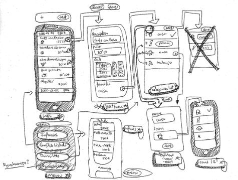
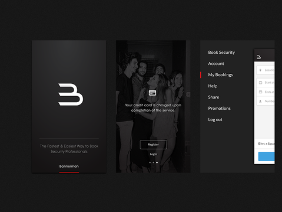
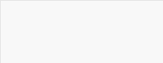
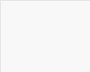
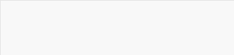
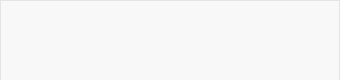

线框图、原型和视觉稿的区别

线框图（Wireframe）
原型（Prototyping）


主要特点：
1、呈现主体信息群
2、勾勒出结构和布局
3、用户交互界面的主视觉和描述
详细解释：
线框图是一种低保真的静态图形，它勾勒出布局轮廓，但是缺少细节。可以把线框图理解为设计图的骨干与核心，它承载着最终产品所有重要的部分。绘制线框图，重点是「快」，可以使用手绘稿或用相关原型工具进行制作。
何时使用：
线框图主要用于产品前期头脑风暴或需求沟通讨论阶段，非正式场合的团队内部交流等。用来激发思考和讨论，收集需求反馈等。
主要特点：
1、包含完整的产品功能与交互流程
2、能够模拟最终产品的功能和交互
3、用于产品开发前期进行用户体验测试
详细解释：
原型应该尽可能模拟最终产品，交互则应该精心模块化，尽量在体验上和最终产品保持一致。但是原型背后的逻辑不要依赖交互形式。减少制作原型的成本，加快开发速度。
何时使用：
原型常用于做潜在用户测试。在正式介入开发阶段前，以最接近最终产品的形式考量产品可用性。原型的直观和易懂倒使它成为最高效的设计文档。


主要特点：
1、表达信息框架，静态演示内容和功能
2、帮助团队成员以视觉的角度审阅项目
详细解释：
视觉稿是高保真的静态设计图。通常来说，视觉稿就是视觉设计的草稿或终稿。在视觉稿定稿前，应与团队成员进行多方沟通和确认，以免造成沟通不足造成后期的返工。
何时使用：
视觉稿主要用于开发阶段收集用户反馈，同时帮助团队成员以视觉的角度审阅项目。




类型

保真度
时间成本

用途

特征
线框图（Wireframe）
低
非正式场合的团队内部交流，收集需求反馈
手绘草图或黑白灰图型，呈现主体布局
原型（Prototyping）
中/高
用于潜在用户测试和开发协作文档
包含完整的产品功能与交互流程
视觉稿（Mockup）
高
收集视觉反馈，以视觉的角度审阅项目
静态的视觉设计稿
视觉稿（Mockup）
总结对比